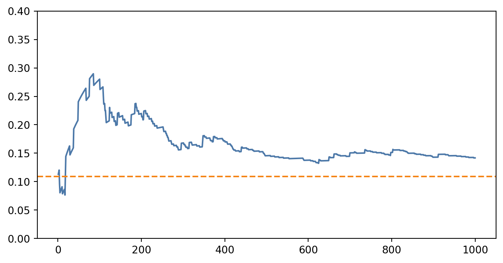

2 Handling Uncertainty
2.1 Learning goals
- Understand the Bayes Theorem as a foundational block for making sense of uncertainty.
2.2 Bayesian Interpreation of Uncertainty
Instead of viewing probabilities in terms of the frequencies of random, repeatabale events, what is referred as the frequentist interpretation of probability, one can see them as proxy for uncertainty quantification. That means, that new events serve as new data points – evidence! – for improving the understanding of uncertainty in a process of interest.
2.2.1 Bayes Theorem
Let us first formally define the Bayes Theorem
Definition 2.1 The probability of an event \(x\) given knowledge of an event \(y\) can be expressed in the following form: \[ p(y\vert x)=\frac{p(x\vert y)p(y)}{p(x)} \tag{2.1}\]
The events \(x\) and \(y\) can be understood as outcomes of the random variables \(X\) and \(Y\), respectively. Random variables are functions that maps our event space \(\Omega\) to event outcomes, e.g., \(x\) and \(y\). When we write \(p(X=x)\) we are referering to the probability that the random variable function \(X\) is evaluated to \(x\). When the context is clear, we can abuse the notation and just write \(p(x)\) or \(p(y)\).
Definition 2.1 is a consequence of two important probability rules: sum rule and product rule.
2.2.2 Probability rules: Sum Rule and Product Rule
The sum rule is also known as Law of Total Probability. Bishop (2006) expresses them as:
\[ p(X) = \sum_Y p(X,Y) \tag{2.2}\] \[ p(X,Y)=p(Y\vert X)p(X) \tag{2.3}\]
Where \(p(X,Y)\) is the joint probability of random variables \(X\) and \(Y\), also commonly expressed as their intersection \(p(X\cap Y)\).
The product rule (Equation 2.3) is also the definition of conditional probability.
2.2.3 Developing the Intuition For Understanding Uncertainty
Looking at Equation 2.1, we see that the probability of \(y\) happening given that \(x\) happened depends on the probability of what we knew before about the process, \(p(x)\), which is commonly referred as the priors and the likelihood of it happening, \(p(x\vert y)\). What we compute is the posterior, that is, the updated probability of \(y\) happening given \(x\) having happened.
Example 2.1 (Anomaly Detection) A machine is equipped with a electric current sensor and a control system that flags if the electric current is outside of the typical range. We can assign a random variable \(A\) (anomaly) that maps boolean outcomes to events in \(\Omega\), i.e., \(A: \Omega\rightarrow\{f,nf\}\), where \(F\) represents at least a flagged event and \(NF\) a non-flagged one, and \(\Omega\) represents the event space for workpieces being processed in the machine.
Let us assume that we monitor another property of this machine, namely, how often we have to discard a workpiece being produced there. We attribute another random variable \(Y\) (outcome) to this processes that also maps \(Y:\Omega\rightarrow\{d,nd\}\)
We want to continuously verify how effective is our anomaly detection metric in predicting defective workpieces, that is, monitor our \(p(Y=d\vert A=f)\) or simply \(p(d,f)\) for convenience. This will be our posterior. Ideally, if we want to implement a metric as proxy for defective workpieces, this posterior should be close to \(1\), i.e., all flagged events led to a defective workpiece.
To make the discussion concrete, consider the following toy scenario. Suppose that, historically, \(2\%\) of the parts produced by the machine turn out defective (a really bad rate, but useful for the demonstration). This means: \[ p(d)=0.02 \]
We also happen to know from historical data that when a defect is present, the current sensor raises a flag \(90\%\) of the time, but it also generates false alarms: even when the part is fine, it still flags \(15\%\) of the time. Formally: \[ p(f\vert d) = 0.9 \text{, } p(f\vert nd) = 0.15 \]
From Equation 2.3 and Equation 2.2, we can compute \(p(f)\):
\[ p(f)=p(f\vert d)p(d) + p(f\vert nd)p(nd) \]
Bayes’ rule lets us update the belief about a part being defective as soon as the sensor fires. Applying Equation 2.1 and since \(Y\) can only assume one of the values in the set \(\{d,nd\}\), i.e., \(p(nd)=1-p(d)\), we have the following equation in function of the variables we already know:
\[ p(d\vert f)=\frac{p(f\vert d)p(d)}{p(f)}=\frac{p(f\vert d)p(d)}{p(f\vert d)p(d) + p(f\vert nd)(1-p(d))} \]
This computes to \(p(d\vert f) =\) 0.11, which is still surprisingly low given our prior and likelihood. The method, however, forces us to be realistic in our belief and say that we either need more evidence to prove \(A\) as a metric for \(Y\) or we should pivot to other experiments. Since our result depended so strongly on our choice of priors, we can assume that reliabily collecting this information is critically important for significant outcomes using the method. Indeed, this is a common critique about the Bayesian approach to probability: it’s often more difficult to be reproduced in comparison to frequentist approaches, since the research outcome depends heavily on these initial assumptions.
To see how new observations gradually nudge our belief, the next simulation follows 1000 consecutive parts using the Algorithm 1. After each part, we recompute the quantities in Bayes’ rule using the empirical frequencies observed so far.
\begin{algorithm} \caption{Sequential Bayesian Update for $p(d\mid f)$}\begin{algorithmic} \Require $\alpha_d, \beta_d$ \Comment{prior counts for $p(d)$} \Require $\alpha_{f\mid d}, \beta_{f\mid d}$ \Comment{prior counts for $p(f\mid d)$} \Require $\alpha_{f\mid nd}, \beta_{f\mid nd}$ \Comment{prior counts for $p(f\mid nd)$} \Require $\{(f_i, d_i)\}_{i=1}^n$ \Comment{sequence of observations} \Ensure $\{\hat{p}_{d\mid f}(i)\}_{i=1}^n$ \Comment{posterior after each observation} \Procedure{UpdatePosterior}{$\alpha_d, \beta_d, \alpha_{f\mid d}, \beta_{f\mid d}, \alpha_{f\mid nd}, \beta_{f\mid nd}, \{(f_i, d_i)\}_{i=1}^n$} \State $c_d \leftarrow 0$ \Comment{defects observed} \State $c_{f\wedge d} \leftarrow 0$ \Comment{flagged defects} \State $c_{f\wedge nd} \leftarrow 0$ \Comment{false alarms} \For{$i = 1$ \To $n$} \State $(f, d) \leftarrow (f_i, d_i)$ \Comment{$f_i \in \{\texttt{flag}, \texttt{no\_flag}\}$} \State $c_d \leftarrow c_d + \mathbb{I}[d = \texttt{defect}]$ \State $c_{nd} \leftarrow i - c_d$ \If{$f = \texttt{flag}$} \If{$d = \texttt{defect}$} \State $c_{f\wedge d} \leftarrow c_{f\wedge d} + 1$ \Else \State $c_{f\wedge nd} \leftarrow c_{f\wedge nd} + 1$ \EndIf \EndIf \State $\hat{p}_d \leftarrow \dfrac{\alpha_d + c_d}{\alpha_d + \beta_d + i}$ \State $\hat{p}_{f\mid d} \leftarrow \dfrac{\alpha_{f\mid d} + c_{f\wedge d}}{\alpha_{f\mid d} + \beta_{f\mid d} + c_d}$ \State $\hat{p}_{f\mid nd} \leftarrow \dfrac{\alpha_{f\mid nd} + c_{f\wedge nd}}{\alpha_{f\mid nd} + \beta_{f\mid nd} + c_{nd}}$ \State $\hat{p}_f \leftarrow \hat{p}_{f\mid d}\hat{p}_d + \hat{p}_{f\mid nd}(1-\hat{p}_d)$ \State $\hat{p}_{d\mid f}(i) \leftarrow \dfrac{\hat{p}_{f\mid d}\hat{p}_d}{\hat{p}_f}$ \EndFor \State \textbf{return} $\{\hat{p}_{d\mid f}(i)\}_{i=1}^n$ \EndProcedure \end{algorithmic} \end{algorithm}
We see that the posterior converged to a value a bit higher than our first analytical estimate. We accumulate much more evidence and, thus, were able to arrive at a more precise estimate to our posterior. In our toy example, an event being flagged doesn’t mean, necessarily, that our workpiece will be defective; in fact, there’s around \(15\%\) chance of it being the case. Note, however, that this is not the same as to say that both events are not correlated.